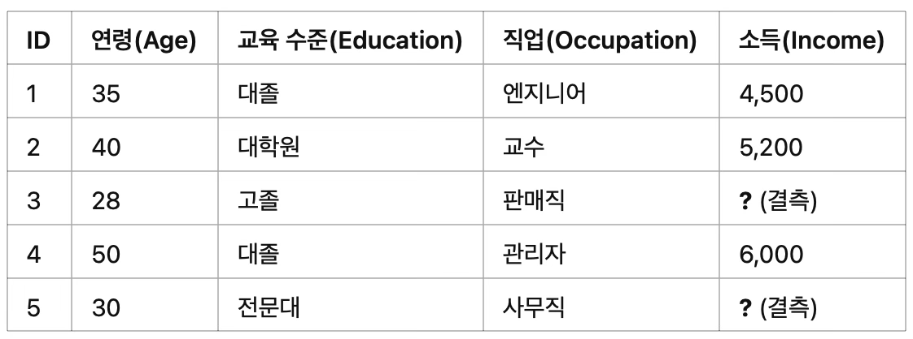
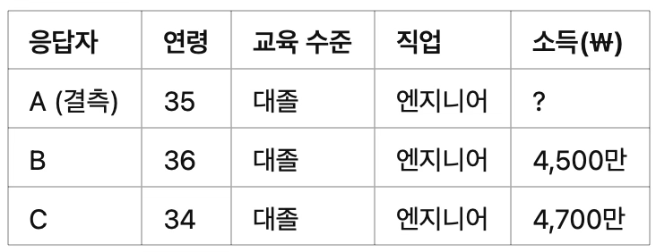

조사방법론. 3. 무응답과 대체
chapter 1. 무응답 개요
설문조사에서 무응답(nonresponse)은 표본으로 선정된 일부 응답자가 질문에 답하지 않는 현상을 의미한다. 이러한 무응답이 발생하면, 추정값이 편향될 수 있으며 표본이 모집단을 제대로 대표하지 못하게 되어 분석 결과의 신뢰성이 떨어질 가능성이 높다.
무응답자가 응답자와 다른 특성을 가진다면, 응답자만을 대상으로 계산한 추정값은 모집단 전체의 실제 값과 차이를 보일 수 있다. 특히 무응답이 일정한 방향이나 경향성을 가지는 경우, 이는 단순한 오류를 넘어서 설계 전체에 체계적인 편향을 초래할 수 있으며, 이를 무응답 편향(nonresponse bias)이라고 한다.
무응답이 특정 집단에 집중될 경우, 표본이 모집단의 다양한 특성을 충분히 반영하지 못하게 된다. 예를 들어, 소득이 높은 사람이나 바쁜 직장인처럼 일정한 특성을 가진 집단의 응답률이 낮다면, 이들의 의견은 과소 대표되거나 완전히 누락될 수 있다. 그 결과 표본의 대표성이 손상된다.
또한 무응답이 무작위로 발생한다면 통계적으로 큰 문제가 되지 않을 수 있지만, 현실에서는 특정 문항이나 주제에 따라 일관된 응답 회피가 발생하는 경우가 많다. 예를 들어 정치적 성향에 대한 질문에서 특정 지지층이 응답을 회피한다면, 결과는 특정 방향으로 왜곡될 수 있다.
무응답으로 인해 유효한 응답 수가 줄어들면, 전체 표본의 크기가 감소하게 되어 통계 추정의 분산이 커지고 표본 오차가 증가한다. 이는 결과의 정확성을 떨어뜨리고, 신뢰구간을 넓혀 결과 해석에 불확실성을 더하게 된다.
결과적으로 무응답이 많을수록 조사 결과를 일반화하기 어려워지고, 정책 결정이나 연구 활용 시 신뢰할 수 없는 정보를 제공하게 될 가능성이 커진다. 따라서 설문조사에서 무응답을 최소화하고, 발생한 무응답을 적절히 보정하는 절차가 중요하다.
단위 무응답 unit nonresponse
무응답이 발생하는 방식 중 하나는 단위 무응답(unit nonresponse)으로, 이는 표본으로 선정된 사람이 조사에 전혀 응답하지 않는 경우를 의미한다. 이 경우, 조사 대상자는 모든 질문에 답하지 않기 때문에 해당 응답자는 전체적으로 누락된다. 예를 들어 어떤 조사 대상자가 전화를 받자마자 “나는 설문조사에 절대 참여하지 않는다. 다시 전화하지 말라”고 말하며 응답을 거부하는 경우, 이는 전형적인 단위 무응답에 해당한다.
항목 무응답 item nonresponse
무응답이 전체 문항이 아닌 일부 질문에서만 발생하는 경우를 항목 무응답(item nonresponse)이라고 한다. 이는 응답자가 특정 질문에 대해서만 답변을 하지 않거나 회피하는 상황을 말한다.
예를 들어 조사자가 “작년 총 가구 소득이 얼마였습니까?”라고 묻자, 응답자가 “모르겠다. 아내가 그런 기록을 관리한다”고 답하며 해당 항목에 대한 응답을 유보하는 경우, 이는 항목 무응답에 해당한다.
chapter 2. 단위 무응답 유형
무응답은 여러 가지 이유로 발생할 수 있으며, 크게 세 가지 유형으로 구분할 수 있다.
첫째, 조사 요청 전달 실패는 조사자가 표본으로 선정된 대상자에게 조사 요청을 전달하지 못하는 경우를 의미한다. 이는 조사 대상자를 물리적으로 찾지 못하거나, 우편으로 보낸 설문지가 반송되는 상황 등이 포함된다. 이러한 경우에는 조사 자체가 이루어지지 않으므로 단위 무응답으로 처리된다.
둘째, 응답 거부는 조사 대상자가 조사 요청을 인지했음에도 불구하고 설문 참여를 명확히 거절하는 경우에 해당한다. 전화나 방문을 통해 접촉이 이루어졌지만, 개인적인 이유, 조사에 대한 불신, 시간 부족 등의 이유로 응답을 거부하는 경우가 여기에 포함된다.
셋째, 응답 불가능은 조사 대상자가 설문 문항을 이해하지 못하거나, 인지적 또는 신체적인 이유로 응답할 수 없는 경우를 의미한다. 예를 들어 고령자나 언어적 장벽이 있는 사람이 질문의 의미를 제대로 파악하지 못해 답변을 제공하지 못하는 상황이 해당된다.
1. 조사 요청 전달 실패로 인한 단위 무응답
비접촉 또는 조사 요청 전달 실패로 인한 무응답은 조사 대상자가 특정한 데이터 수집 방식으로는 접근이 어려운 경우에 발생한다. 이와 같은 상황에서 중요한 개념은 접근 가능성이며, 이는 조사자가 표본으로 선정된 대상자에게 실제로 연락하거나 조사를 수행할 수 있는지를 의미한다. 조사 대상자의 연락처 정보가 부정확하거나, 반복적인 접촉 시도에도 불구하고 연결되지 않는 경우, 설문 참여 여부와 무관하게 조사가 이루어지지 않게 된다.
가구 설문조사에서 접근 가능성 문제
조사자가 응답자가 집에 머무는 시간을 알고 있다면, 단 한 번의 시도로도 성공적으로 접촉할 수 있다. 그러나 실제 조사에서는 표본 대상자의 접근 가능한 시간이 사전에 알려져 있는 경우가 드물다. 이로 인해 조사자는 동일한 대상자에게 여러 차례 연락을 시도해야 하며, 이는 조사 비용과 시간이 증가하는 원인이 되기도 한다.
접근이 어려운 사례
조사 요청 전달이 실패하는 주요 원인 중 하나는 물리적인 접근의 제한이다. 이는 외부인의 접촉을 차단하는 환경에서 자주 발생하며, 예를 들어 출입이 통제된 아파트 건물이나 자동 응답 전화 시스템이 설치된 경우 조사자가 대상자에게 직접 접근하기 어렵다.
우편을 통한 설문조사에서는 설문지가 대상자에게 도달하더라도, 발신자를 알 수 없는 우편물을 열어보지 않고 폐기하는 사람들은 응답에서 자연스럽게 누락될 가능성이 높다.
전화 조사에서도 비슷한 문제가 발생한다. 예를 들어 집에 머무는 시간이 거의 없는 사람들은 조사자가 여러 차례 전화를 시도하더라도 연결되지 않을 가능성이 크다. 또한 발신자 번호를 차단하거나 필터링하는 서비스를 이용하는 경우, 조사원의 연락 시도 자체가 인지되지 않아 응답으로 이어지지 않을 수 있다.
첫번 째 시도에서 조사 성공률이 가장 높다.
성공적인 연락률은 통화 시도 횟수가 늘어날수록 점차 감소하는 경향이 있으며, 이러한 감소는 종종 지수적인 형태를 따른다. 특히 가구를 대상으로 한 설문조사에서는 첫 번째 접촉을 성사시키기 위해 몇 차례의 전화 시도가 필요한지를 결정하는 데 다음과 같은 두 가지 요인이 주요하게 작용한다.
첫째, 통화가 이루어지는 시간대는 응답률에 영향을 미친다. 일반적으로 저녁 시간이나 주말에 걸려온 전화는 평일 낮 시간에 비해 응답률이 더 높은 것으로 나타난다. 이는 많은 사람들이 해당 시간대에 집에 머물 가능성이 높기 때문이다.
둘째, 모집단의 특성에 따라 접근 가능성이 다르게 나타날 수 있다. 예를 들어 직업, 생활 패턴, 주거 형태 등에 따라 어떤 모집단은 조사자와의 연락이 상대적으로 더 용이한 반면, 또 다른 모집단은 접근이 더 어려울 수 있다. 이러한 차이는 조사 설계와 연락 전략에 반영될 필요가 있다.
우편, 이메일, 웹 설문조사
인터뷰어가 직접 접촉하지 않는 방식의 조사는, 조사 요청이 표본 대상자에게 지속적으로 노출될 수 있도록 설계되어야 한다. 예를 들어 우편 설문조사의 경우, 설문지가 일단 가구에 도착하면 응답 여부와 관계없이 일정 기간 동안 가구 내에 그대로 남아 있게 된다. 이로 인해 가구 구성원은 자신이 원하는 요일이나 시간대에 설문에 응답할 수 있다.
이러한 방식에서는 전화나 방문 조사와 달리, 조사자가 능동적으로 접촉을 시도하지 않더라도 응답이 이루어질 가능성이 생긴다. 따라서 직접적인 접촉을 필요로 하는 조사 방식과는 달리, 표본 단위가 첫 접촉에 이르기까지 필요한 시도 횟수나 시간의 분포가 서로 다른 양상을 보인다.
2. 응답거부로 인한 단위 무응답
설문조사의 성공 여부는 응답자가 낯선 조사자의 요청에 자발적으로 응할 의사가 있는지에 크게 좌우된다. 응답자가 설문에 참여하기 위해서는 몇 가지 심리적 조건이 충족되어야 한다.
우선, 조사자로부터 신체적 또는 경제적 피해를 입을 것이라는 두려움이 없어야 한다. 응답자는 자신에게 어떠한 해도 가해지지 않을 것이라는 확신을 가져야 한다.
또한, 응답 과정에서 자신의 평판이 손상될 가능성을 걱정하지 않아야 하며, 조사 참여가 사회적 이미지에 부정적인 영향을 미치지 않을 것이라고 느껴야 한다.
설문 참여로 인해 심리적 스트레스를 겪을 수 있다는 불안도 응답을 가로막는 요인이 될 수 있다. 따라서 조사는 응답자에게 부담을 주지 않는 방식으로 진행되어야 한다.
기밀 보장에 대한 신뢰 역시 중요한 요소이다. 응답자는 조사자가 제공한 정보 보호 약속을 믿을 수 있어야 하며, 자신의 응답 내용이 외부로 유출되지 않을 것이라는 확신을 가져야 한다.
마지막으로, 응답자는 자신의 의견을 자유롭게 표현할 수 있으며, 솔직한 정보를 제공하더라도 불이익을 받거나 위험에 처하지 않을 것이라고 믿을 때 비로소 진정한 응답이 이루어진다. 이러한 심리적 안정이 확보되어야만 응답자는 설문조사에 적극적으로 참여하게 된다.
(1) 설문조사와 타 조사의 차이
설문조사 요청은 사람들이 일상생활에서 경험하는 다양한 외부 요청들과 비교해볼 수 있으며, 이러한 비교는 설문 응답 행태를 이해하는 데 중요한 시사점을 제공한다. 대중이 낯선 사람으로부터 받는 요청은 일반적으로 판매 전화, 업무 또는 서비스 관련 연락, 기부 요청, 정치 활동, 그리고 설문조사 등으로 나눌 수 있다. 이들은 여러 측면에서 서로 다른 특성을 보인다.
첫째, 사람들의 경험 빈도는 접촉 방식에 따라 달라진다. 과거에는 방문 판매가 흔했으나, 최근에는 텔레마케팅이 그 자리를 대신하고 있다. 이로 인해 낯선 사람으로부터 걸려오는 전화나 우편, 이메일 메시지는 설문조사보다는 상품이나 서비스 판매를 목적으로 하는 경우가 훨씬 더 많다. 이러한 경험의 불균형은 응답자가 설문조사 요청을 다른 상업적 요청과 혼동할 가능성을 높인다.
둘째, 대중의 인식 수준에서도 차이가 나타난다. 기업이나 널리 알려진 자선단체, 정치 단체의 경우 많은 사람들이 해당 조직의 이름에 익숙할 수 있다. 반면, 설문조사를 실시하는 주체가 대학이나 정부 기관인 경우에도 일부 응답자는 사전에 해당 기관을 인식하고 있을 수 있지만, 그렇지 않은 경우에는 요청자가 낯설게 느껴질 수 있다.
셋째, 인센티브의 제공 여부도 다르다. 설문조사는 응답에 대한 감사의 표시로 소정의 금전적 보상이나 선물을 제공하는 경우가 있으나, 판매나 서비스 요청에서는 일반적으로 이러한 유인책이 제공되지 않는다. 이는 설문 응답 동기를 유도하는 중요한 차별점이 될 수 있다.
넷째, 연락의 지속성 측면에서 판매 및 모금 요청은 대체로 반복적인 시도를 하지 않는 경향이 있다. 망설이는 대상자를 설득하기보다는 새로운 대상을 찾는 것이 더 효율적이기 때문이다. 이에 반해, 설문조사 특히 확률 표본조사는 표본의 대표성을 확보해야 하므로 동일 가구에 대해 여러 차례 연락을 시도하는 경우가 많다.
다섯째, 요청의 성격에서도 차이가 있다. 판매는 일반적으로 상품이나 서비스에 대한 금전적 지불을 요구하지만, 설문조사는 응답자의 시간과 정보를 제공받는 것이 목적이다. 설문은 응답자의 자발적인 참여가 아닌 조사자의 접근으로 시작되기 때문에, 응답자는 설문 참여보다는 자신의 원래 활동으로 돌아가는 것을 더 중요하게 여길 수 있다.
이러한 반복적인 경험은 사람들로 하여금 설문 요청에 대해 일정한 반응을 형성하게 만든다. 즉, 응답자의 반응은 과거의 유사한 경험에서 비롯된 습관적인 대응일 수 있다. 설문 요청이 상업적 전화와 혼동되어 거절되는 경우도 자주 발생하는데, 이를 해결하기 위해서는 반복적인 연락을 통해 조사 목적을 명확히 설명하는 것이 중요하다. 또한 신뢰할 수 있는 기관이 주관하는 조사라면, 조사원이 해당 기관의 이름을 강조함으로써 상업적 목적이 아님을 분명히 할 수 있다.
(2) 응답거절 단위 무응답 발생 요인
설문조사에서 응답률을 높이고 무응답 편향을 줄이기 위해서는 응답 거절로 인한 단위 무응답 발생 요인을 이해하는 것이 중요하다. 이러한 요인은 조사자가 통제할 수 없는 요인과 조정 가능한 요인으로 나눌 수 있다.
먼저, 조사자가 조정하기 어려운 요인으로는 사회적 환경과 개인 수준의 특성이 있다. 예를 들어, 대도시 지역에서는 가구 단위 설문에서 응답 거절 비율이 상대적으로 높게 나타난다. 이는 도시 생활의 익명성, 바쁜 생활 패턴, 낯선 사람에 대한 경계심 등이 영향을 줄 수 있다. 또한, 가구 구성원이 여러 명인 가정은 1인 가구보다 응답에 협조할 가능성이 높으며, 이는 집단 내의 의견 조율이나 설문 참여에 대한 심리적 부담이 분산되기 때문이다. 개인 수준에서는 남성이 여성보다 설문에 응하지 않을 가능성이 더 높은 경향이 관찰된다.
한편, 조사자가 조정할 수 있는 요인도 있다. 대표적인 예로는 조사원 개인의 능력과 설문 설계 방식이 있다. 경험이 풍부한 조사원은 응답자의 반응에 능숙하게 대응하고 신뢰를 구축하는 데 유리하므로, 경험이 적은 조사원보다 더 높은 응답 협조율을 이끌어낼 수 있다. 또한, 응답자에게 소정의 인센티브를 제공하는 것은 응답률을 높이는 데 효과적이며, 이는 설문 참여에 대한 긍정적인 동기를 부여하는 역할을 한다.
이와 같은 요인들을 종합적으로 고려하여 설문조사를 설계하고 실행한다면, 단위 무응답을 줄이고 보다 신뢰성 있는 결과를 얻을 수 있다.
(3) 응답거절 관련 이론적 가설
응답 거절을 설명하는 데 활용되는 이론적 가설은 설문조사의 응답률과 무응답 편향을 이해하는 데 중요한 통찰을 제공한다. 다음의 네 가지 가설은 응답자의 행동을 설명하는 대표적인 이론적 틀로 제시된다.
첫째는 기회비용 가설이다. 이 가설에 따르면 바쁜 사람일수록 인터뷰나 설문조사 참여를 거부할 가능성이 높다. 이들은 일상에서 다른 활동에 할애할 시간이 부족하므로, 설문 참여를 시간 낭비로 인식하거나 부담스럽게 느낀다.
둘째는 사회적 고립 개념이다. 이는 사회경제적 계층의 양극단에 위치한 사람들이 설문 요청에 응하지 않을 가능성이 높다는 주장이다. 지나치게 부유하거나 매우 빈곤한 계층의 경우, 사회적 제도나 기관과의 관계가 약해 설문 요청 자체를 거부하거나 무관심하게 대할 수 있다.
셋째는 주제 관심 가설이다. 이 가설은 특정 주제에 대해 관심이 있는 사람들만이 설문에 적극적으로 응하면서, 표본이 해당 주제에 편향된 집단으로 구성될 가능성이 있다는 점을 지적한다. 이러한 경우 통계적 결과에 무응답 오류가 발생할 수 있으며, 이는 전체 모집단을 반영하지 못하는 왜곡된 결과로 이어질 수 있다.
넷째는 과도한 설문조사 개념이다. 반복적이고 빈번한 설문 요청은 응답자의 피로도를 높이고, 결과적으로 설문 참여를 꺼리게 만드는 요인이 될 수 있다. 이는 특히 동일한 대상자에게 유사한 설문이 반복적으로 도달하는 상황에서 더욱 두드러진다.
이러한 가설들은 설문조사 과정에서 나타나는 응답 거절 현상을 보다 정교하게 이해하고, 이를 줄이기 위한 설계 전략을 수립하는 데 유용하게 활용될 수 있다.
(4) 레버리지-현저성 이론 leverage-salience theory
레버리지-현저성 이론(leverage-salience theory)은 사람들이 설문 요청의 여러 속성을 서로 다르게 중요하게 여긴다는 점에 주목한다. 설문 주제, 인터뷰에 소요되는 시간, 후원 기관, 수집된 데이터의 활용 목적 등이 이에 해당하며, 응답자는 각 속성을 긍정적으로 평가할 수도 있고 부정적으로 받아들일 수도 있다.
조사자는 사전에 어떤 속성이 응답자에게 중요한지를 알기 어렵지만, 설문이 진행되는 과정에서 특정 속성이 강조되면 응답자의 응답 여부에 영향을 미칠 수 있다. 즉, 강조된 요소가 응답자의 가치관이나 관심과 부합하면 설문에 응할 가능성이 높아지며, 반대로 불편함이나 거부감을 유발하는 경우에는 응답을 거절할 가능성이 높아진다.
예를 들어, 첫 번째 응답자는 설문 주제에 높은 관심을 가지지만 시간이 많이 걸리는 점을 부담스럽게 느낄 수 있고, 두 번째 응답자는 주제에는 관심이 없지만 제공되는 인센티브에 긍정적인 반응을 보일 수 있다. 이때 조사자가 설문의 후원 기관이나 보상에 대해 강조한다면, 각 응답자에게 해당 요소가 설문 참여 여부를 결정짓는 기준으로 작용할 수 있다. 이러한 상황에서는 주제에 긍정적인 첫 번째 응답자가 설문에 응할 가능성이 더 높아질 수 있다.
이 이론이 주는 주요 시사점은 설문조사에서 응답자의 다양성을 고려한 맞춤형 접근이 필요하다는 것이다. 응답자가 설문 요청을 수락하거나 거절하는 이유는 사람마다 다르고, 조사자는 이러한 이유를 조사 초기에는 파악하기 어렵다. 따라서 단일한 접근 방식만으로는 다양한 응답자의 요구와 우려를 효과적으로 해결하기 어렵다. 대신, 응답자가 긍정적으로 인식할 수 있는 속성을 파악하고 이를 적절히 강조하는 전략을 통해 응답률을 높이는 것이 효과적이다.
3. 요청된 데이터를 제공할 수 없는 경우의 단위 무응답
단위 무응답은 응답자가 설문에 응할 의사가 있음에도 불구하고, 요청된 데이터를 제공할 수 없는 경우에도 발생할 수 있다. 이러한 상황은 표본 대상자와의 접촉이 성공적으로 이루어졌더라도, 다양한 제약으로 인해 응답이 불가능한 경우를 포함한다.
예를 들어, 일부 응답자는 설문이 제공되는 언어를 전혀 이해하지 못하거나, 질문의 내용을 이해하거나 기억에서 필요한 정보를 불러오는 것이 어려울 수 있다. 정신적인 부담이나 인지적 제약이 있는 경우도 여기에 해당된다. 또한, 건강 문제로 인해 응답이 어려운 경우도 있으며, 문해력에 제한이 있어 설문지를 읽거나 해석하는 데 어려움을 겪는 경우도 무응답으로 이어질 수 있다. 기업을 대상으로 한 조사에서는 조사 형식이 적절하지 않거나 조사에 할애할 시간이 부족하여 필요한 정보를 제공하지 못하는 경우가 발생하기도 한다.
이와 같이 응답 불가능의 원인이 다양하기 때문에, 단위 무응답이 통계 분석에 미치는 영향도 상황에 따라 달라진다. 예를 들어, 인구의 건강 상태를 조사하는 설문에서는 건강상의 이유로 응답이 이루어지지 않는 경우가 무응답 편향을 유발할 수 있다. 건강이 좋지 않은 사람들이 조사에서 빠지게 되면, 전체 인구의 건강 수준이 실제보다 더 양호하게 추정될 가능성이 있다. 반면, 동일한 조사에서 정치적 태도나 사회적 인식을 측정하는 경우에는 같은 무응답이 결과에 미치는 영향이 상대적으로 작을 수 있다.
따라서 이러한 유형의 무응답은 단순한 데이터 누락 이상의 의미를 가지며, 조사 주제와 분석 목적에 따라 그 영향을 면밀히 평가하고 보정할 필요가 있다.
chapter 3. 응답률 계산
1. 무응답이 통계 품질에 미치는 영향
무응답으로 인해 발생하는 편향은 무응답의 원인이 조사 대상이 되는 통계적 특성과 연관될 때 더욱 심각해진다. 예를 들어, 혼자 사는 가구의 비율을 조사하는 경우를 생각해보면, 1인 가구는 집에 머무는 시간이 상대적으로 짧아 조사자가 연락을 시도했을 때 접촉이 어려울 수 있다. 이 경우 단 한 번의 연락 시도만으로는 해당 가구가 표본에서 누락될 가능성이 높으며, 결과적으로 혼자 사는 사람의 비율이 실제보다 낮게 추정될 수 있다. 반면, 반복적인 연락 시도를 통해 이러한 가구를 조사에 포함시키면 오히려 과도하게 반영되어 실제보다 높은 추정값이 나올 수도 있다. 이는 무응답이 가구의 거주 시간과 밀접하게 관련되어 있기 때문이다.
이와 달리, 정치적 관심도와 같은 주제를 조사하는 경우에는 무응답이 통계에 미치는 영향이 상대적으로 작을 수 있다. 따라서 무응답이 초래하는 통계적 편향은 조사 주제와 무응답의 원인 간의 관련성에 따라 달라질 수 있다.
거절 무응답 오류는 응답자가 설문에 응하지 않는 이유가 해당 통계와 관련이 있을 때 발생한다. 예를 들어, 어떤 설문조사에서 특정 인센티브가 특정 집단의 응답률을 높이는 데는 효과적일 수 있으나, 동시에 응답자의 구성이나 특성에 영향을 주어 조사 결과 자체에 변화를 일으킬 가능성도 있다.
무응답 편향이 발생하는지를 판단하기 위해서는 응답 여부에 영향을 미치는 인과 메커니즘을 고려해야 한다. 어떤 경우에는 무응답의 원인이 조사 대상과 직접적인 관련이 없어 통계적으로 큰 문제가 되지 않기도 한다. 예를 들어, 가구의 전기 사용량을 조사할 때 집에 머무는 시간이 응답 성향에는 영향을 줄 수 있지만, 이 성향이 전기 사용량과 직접적인 관련을 가지지 않는다면 무응답은 비교적 무해한 것으로 간주할 수 있다.
반면, 무시할 수 없는 인과 메커니즘이 작용하는 경우도 있다. HIV 유병률 조사에서는 응답자의 감염 여부 자체가 설문 참여 여부에 영향을 줄 수 있다. 이러한 경우 무응답은 단순한 비응답이 아닌 통계의 과소추정을 초래하는 심각한 편향 요인이 될 수 있다. 실제로 미국에서 HIV 유행 초기 공중보건 당국은 혈액 채취를 포함한 전국적 유병률 조사를 실시하고 금전적 보상까지 제공했으나, HIV 감염자들의 응답률은 여전히 낮았다. 기록 대조 연구에 따르면 이는 사회적 낙인으로 인해 감염자들이 설문 참여를 기피했기 때문이며, 그 결과 조사된 HIV 감염률이 실제보다 낮게 추정되는 과소추정이 발생한 것으로 나타났다.
무응답의 영향은 조사 주제와 맥락에 따라 다르게 나타난다. 어떤 조사에서는 무응답률이 높든 낮든 결과에 큰 차이를 주지 않는 경우도 있으며, 이로 인해 일부 연구자들은 무응답률을 중요하지 않다고 간주하기도 한다. 이는 무응답률이 반드시 조사 결과의 질을 저해한다는 가정이 항상 성립하지는 않는다는 점을 보여준다.
그러나 무응답의 원인이 조사 대상 속성과 밀접하게 연관된 경우에는 통계적 추정에 심각한 왜곡을 초래할 수 있다. 문제는 대부분의 경우 연구자가 무응답이 어떤 특성과 연관되어 발생하는지를 명확히 파악하기 어렵다는 데 있다. 이러한 불확실성 속에서 무응답의 영향을 정확히 측정하거나, 최적의 응답률을 판단하는 것은 현실적으로 쉽지 않다. 따라서 대부분의 연구에서는 조사 예산이 허용하는 범위 내에서 가능한 한 높은 응답률을 확보하려는 전략이 일반적으로 사용된다.
2. 응답률 계산
(1) 무응답 편향 계산 공식
무응답 편향nonresponse bias 계산식: \({\overline{y}}_{r} - {\overline{y}}_{s} = \frac{m_{s}}{n_{s}}({\overline{y}}_{r} - {\overline{y}}_{m})\)
\({\overline{y}}_{s}\): 특정 표본에서 선택된 전체 응답의 평균
\({\overline{y}}_{r}\): 해당 표본 내 응답자의 평균
\({\overline{y}}_{m}\): 해당 표본 내 무응답자의 평균
\(n_{s}\): 해당 표본의 총 표본 수
\(r_{s}\): 해당 표본 내 응답자의 수
\(m_{s}\): 해당 표본 내 무응답자의 수
무응답자의 평균, \({\overline{y}}_{m}\)을 알 수 없으나 확률적인 특성을 가질 수 있으므로 이를 반영한 보다 일반적인 편향 공식은 다음과 같다.
\[bias({\overline{y}}_{r}) = \text{Cov}(r_{i},Y_{i}) + E\left\lbrack \left( \frac{m_{s}}{n_{s}} \right)({\overline{y}}_{r} - \overline{Y}) \right\rbrack\]
응답 확률(\(r_{i}\))과 관심 변수(\(Y_{i}\)) 간의 공분산: 이는 응답자가 될 확률과 조사 대상 변수 간의 상관관계를 의미하며, 응답자가 될 가능성이 높은 사람이 특정한 특성을 가질 경우 편향이 발생할 수 있다.
기대 무응답률과 전체 평균의 차이: 두 번째 항은 기대 무응답률 \(\frac{m_{s}}{n_{s}}\)과 응답자 평균(\({\overline{y}}_{r})\) 과 모집단 평균(\(\overline{Y}\))의 차이의 곱이다. 이는 무응답자의 특성이 전체 모집단과 다를 경우 발생하는 편향을 나타낸다.
무응답자의 특성이 더욱 뚜렷해지고 무응답률이 낮아지더라도, 무응답 오류가 반드시 감소하는 것은 아니다. 이는 무응답자의 특성이 전체 모집단과 크게 다를 경우, 단순히 응답률을 높이는 것만으로는 통계적 편향을 효과적으로 줄이기 어렵다는 점을 시사한다. 다시 말해, 응답률이 개선되었다고 하더라도 응답하지 않은 집단의 특성이 여전히 표본에서 제대로 반영되지 않는다면, 결과적으로 무응답 편향은 여전히 존재하거나 오히려 심화될 수도 있다. 따라서 단순한 응답률 향상보다는, 무응답자의 특성과 응답자의 차이를 파악하고 적절한 보정 방법을 병행하는 노력이 필요하다.
(2) 응답율 계산 주요 이슈
무응답률을 단순히 \(\frac{m_s}{n_s}\) 의 비율로 계산하는 방식은 그 계산에 내포된 복잡성을 감추는 결과를 낳을 수 있다. 무응답률은 무응답 오류를 구성하는 주요 요소 중 하나이며, 때로는 조사 결과의 신뢰도를 높여 보이기 위해 의도적으로 무응답률을 낮게 산정하려는 경향도 나타난다. 하지만 무응답률의 정확한 계산에는 여러 가지 실질적인 문제가 존재한다.
첫째, 표본 프레임에는 조사 대상이 아닌 단위가 포함될 수 있기 때문에, 조사 대상자의 적격성을 사전에 선별하는 과정이 필요하다. 예를 들어, 가구를 대상으로 하는 전화 조사에서 표본 프레임에 업무용 전화번호가 포함되어 있는 경우, 해당 번호의 수신자가 조사 대상에 해당하는지를 확인하기 어렵다. 이로 인해 응답률 계산 시 분모에 어떤 대상을 포함할 것인지에 대한 기준이 불확실해질 수 있다.
둘째, 일부 표본은 클러스터 단위로 구성되어 있어, 표본 추출 단계에서 개별 조사 대상자의 수를 알기 어려운 경우가 있다. 예를 들어, 학교를 표본 단위로 설정한 후 그 안에서 학생을 조사하는 경우, 전체 클러스터가 무응답으로 분류될 때 실제 몇 명이 응답하지 않은 것인지 명확히 알기 어렵다. 이는 무응답률 산정 시 분자의 해석에 불확실성을 더한다.
셋째, 표본 프레임에 포함된 요소들이 동일한 선택 확률을 갖지 않는 경우, 응답률 계산에 가중치를 반영해야 하는지 여부에 대한 고민이 필요하다. 예를 들어, 특정 소수 민족 집단을 초과 표집한 경우, 응답률 산정 시 이들의 과대표집 비율을 그대로 반영할 것인지 아니면 가중치를 조정할 것인지에 대한 기준이 모호할 수 있다.
이러한 이유로 인해 응답률은 단순한 비율 수치 이상의 의미를 가지며, 무응답률의 해석과 활용에 있어 보다 세심한 접근이 요구된다.
(3) 응답률 계산
첫 번째와 두 번째 이슈를 해결하는 방법 중 하나는 분모의 값을 추정하는 것이다. 이때 외부 정보 또는 다른 사례에서 얻은 정보를 활용할 수 있으므로 응답률은 다음과 같이 계산될 수 있다.
\(\frac{I}{I + R + NC + O + e(UH + UO)}\), 여기서 \(I\)은 조사 완료자 수, \(R\)은 거절 및 중단, \(NC\)은 미접촉, \(O\)은 기타 적격 사례, \(UH\)은 조사대상자 여부가 불분명한 사례, \(UO\)은 기타 적격 여부가 불분명한 사례, \(e\)은 적격 여부가 불분명한 사례 중 적격으로 추정되는 비율이다. 변수 \(e\)의 추정치는 현재 진행 중인 설문조사에서 얻을 수 있다.
\[e = \frac{I + R + NC + O}{I + R + NC + O + \text{샘플에 포함된 부적격 사례}}\]
만약 \(e\)에 대한 신뢰할 수 있는 추정치를 얻을 수 없다면 \((UH + UO)\)을 계수 없이 분모를 사용하거나 분모에서 이를 제외하는 방식이다.
응답률을 추정할 때 선택 확률이 불균등한 경우, 단순한 계산 방식만으로는 정확한 응답률을 산정하기 어렵다. 예를 들어, 행정 서비스에 대한 사회조사를 실시하면서 저소득층 거주 지역을 다른 지역에 비해 두 배 높은 비율로 표본추출한 경우를 생각해보자. 이와 같은 설계에서는 응답률과 관련해 다음과 같은 두 가지 주요 문제가 발생할 수 있다.
첫째는 층별 응답률 비교이다. 저소득층 지역과 비저소득층 지역 간의 응답률을 각각 구해 비교하는 것은 일반적인 접근 방식이며, 두 집단 간의 평균 차이를 분석하는 데 유용하다. 이 경우에는 각 층 내에서의 응답률을 별도로 계산하고, 단순 비교를 통해 응답 특성을 이해할 수 있다. 이러한 분석에서는 앞서 설명한 표준적인 응답률 계산 방식이 적용 가능하다.
둘째는 전체 표본의 응답률을 계산하는 경우이다. 만약 분석의 초점이 전체 모집단의 평균에 있다면, 응답률을 계산할 때 표본 추출 시의 불균등한 선택 확률을 반영해야 한다. 즉, 각 표본 요소의 선택 확률에 따라 가중치(\(w_i\))를 부여한 후 이를 활용하여 전체 응답률을 산정해야 한다. 이러한 가중 응답률 계산은 전체 표본이 모집단을 얼마나 잘 대표하는지를 보다 정확히 평가할 수 있도록 도와준다.
이처럼 불균등 표집 설계에서는 응답률 계산 시 분석 목적에 따라 적절한 방법을 선택해야 하며, 층별 비교와 전체 평균 추정에서 서로 다른 계산 방식이 요구된다.
다양한 응답률 지표의 활용
응답률을 해석하고 활용할 때는 조사 목적과 구조에 따라 적절한 지표를 선택하는 것이 중요하다. 단순한 전체 응답률 외에도 다양한 유형의 응답률 지표가 존재하며, 이는 조사 설계와 분석 목적에 따라 다르게 적용될 수 있다.
우선, 거절률은 설문 요청을 받은 대상자 중에서 응답을 거부한 비율을 의미하며, 일반적으로 \(R / (I + R)\) 의 공식으로 계산된다. 여기서 \(R\) 은 거절 수, \(I\)는 실제 응답 수를 나타낸다. 또한, 처음에는 응답을 거절했지만 이후에 설문에 참여한 경우를 반영하는 거절 변환율도 함께 고려할 수 있다. 이러한 지표는 조사 접근 방식의 효과성을 평가하는 데 유용하다.
다음으로, 포괄률은 특히 기업을 대상으로 한 조사에서 사용되며, 전체 조사 대상 집단 중 실제 응답한 단위가 차지하는 비율을 의미한다. 이는 예를 들어 생산량이나 고용 규모와 같은 정보를 추정할 때 중요하게 고려된다. 이때 대형 유통업체인 이마트가 응답하지 않는 것과, 소규모 동네 편의점이 빠지는 경우는 조사 결과에 미치는 영향이 다르기 때문에 단순한 개수 기준의 응답률보다 포괄률이 더 적절한 지표가 될 수 있다.
또한, 복합 응답률은 수행평가조사와 같이 다단계 표본추출이 이루어지는 구조에서 활용된다. 예를 들어, 학교와 학생이라는 두 수준에서 각각 무응답이 발생하는 경우, 이들 각 수준의 응답률을 결합하여 전체 응답률을 계산하는 방식이다. 이는 조사 참여가 여러 단계를 거치는 설계에서 보다 정확한 응답 수준을 반영할 수 있도록 한다.
결론적으로, 응답률은 단일한 개념으로 이해하기보다는, 조사 대상, 설계 구조, 분석 목적에 따라 다양한 형태로 정의되고 활용될 수 있으며, 상황에 맞는 지표를 적절히 선택하는 것이 중요하다.
chapter 4. 항목 무응답
1. 항목 무응답 정의
항목 무응답은 설문조사에서 응답자가 전체 설문에 참여하였음에도 불구하고 특정 질문에 대해서만 응답하지 않는 경우를 의미한다. 예를 들어, 소비자 조사의 응답자가 대부분의 문항에 성실히 응답하였더라도, 조사자가 지난 1년간의 가족 소득을 묻는 질문에 대해서는 답변을 거부할 수 있다. 항목 무응답은 단위 무응답과 마찬가지로 통계에 편향을 일으킬 수 있으나, 그 영향은 해당 항목의 데이터를 활용한 통계에만 국한된다.
항목 무응답이 발생하는 원인은 단위 무응답과는 성격이 다를 수 있다. 단위 무응답은 설문 참여 여부를 결정하는 초기 단계에서 발생하는 반면, 항목 무응답은 설문이 진행되는 도중 개별 문항에 대한 응답 결정 과정에서 나타난다.
항목 무응답의 주요 원인에는 다음과 같은 요인이 포함된다. 첫째, 응답자가 질문의 의도를 충분히 이해하지 못할 경우 답변을 생략할 수 있다. 둘째, 질문에 대한 정보를 기억해내기 어렵거나, 정확한 수치를 제공하기 어려운 상황도 무응답으로 이어질 수 있다. 셋째, 응답자가 질문 내용이 민감하다고 느끼거나, 정보를 공개할 동기나 의지가 부족한 경우에도 응답을 거부할 가능성이 있다.
또한, 일부 응답자는 자신이 제공할 수 있는 답변이 정확하지 않다고 판단할 때 해당 항목을 생략하기도 한다. 이러한 상황에서는 질문의 형식을 조정하여 응답률을 개선할 수 있다. 예를 들어, 소득을 구체적인 금액이 아니라 범위로 제시하면, 응답자가 보다 부담 없이 응답할 수 있어 항목 무응답을 줄이는 데 도움이 될 수 있다.
Beatty-Herrmann 모델
Beatty-Herrmann 모델은 항목 무응답이 발생하는 과정을 인지적 측면과 응답 경로의 차이에 따라 설명하는 이론적 틀이다. 이 모델은 응답자가 필요한 정보를 얼마나 쉽게 접근할 수 있는지를 기준으로 네 가지 인지 상태를 제시하며, 각 상태에서 응답이 이루어질 가능성과 오류 발생 가능성을 함께 설명한다.
첫 번째는 가용한 정보 상태이다. 이는 응답자가 질문에 필요한 정보를 쉽게 회상할 수 있는 경우를 의미한다. 이 상태에서는 대부분 정확한 응답이 이루어지며, 응답 오류가 발생할 가능성도 매우 낮다.
두 번째는 접근 가능한 정보 상태이다. 이 경우, 응답자가 정보를 즉시 기억해내지는 못하지만, 약간의 인지적 노력이나 조사원의 유도에 의해 기억을 떠올릴 수 있다. 이러한 상황에서도 응답은 대체로 이루어지며, 정확성도 비교적 높은 편이지만, 일부 오류가 포함될 수 있다.
세 번째는 추정 가능한 정보 상태이다. 응답자가 직접적인 기억은 없지만, 유사한 경험이나 논리적 추론을 통해 정보를 생성할 수 있는 경우에 해당한다. 이때 제공되는 응답은 어느 정도 일관성을 가질 수 있지만, 오류가 발생할 가능성이 높으며, 응답자가 스스로 신뢰하지 못해 응답을 포기할 경우 무응답으로 이어질 수 있다.
마지막으로, 추정 불가능한 정보 상태는 응답자가 해당 질문에 대한 정보를 전혀 기억하지 못하고, 이를 유추할 수 있는 근거조차 없는 경우를 말한다. 이 상태에서는 대부분 응답이 이루어지지 않으며, 항목 무응답으로 직접 연결된다.
이 모델은 항목 무응답을 단순한 의사결정 결과가 아니라, 응답자의 인지적 정보 처리 과정의 산물로 이해할 수 있도록 도와주며, 질문 설계와 조사 전략 수립에 유용한 시사점을 제공한다.
2. 항목 무응답 줄이기 위한 설계적 요소
(1) 응답 과정
응답 과정은 설문조사에서 응답이 이루어지기까지의 일련의 단계로 구성되며, 일반적으로 접촉 단계, 초기 결정 단계, 그리고 최종 결정 단계의 세 단계로 구분된다. 각 단계는 응답률과 조사 품질에 중요한 영향을 미치며, 단계별로 다양한 요인이 작용한다.
접촉 단계에서는 응답자와의 접촉이 가능한지를 판단하며, 이는 조사 성공의 첫 번째 조건이 된다. 이 단계에서는 다음과 같은 요소들이 고려된다. 우선, 자료 수집 기간이 길수록 응답자가 설문 요청을 인지하고 응답할 기회를 가질 가능성이 높다. 또한, 면접자에게 과도한 업무량이 배정되면 개별 응답자와 충분히 접촉하기 어려워져 응답률이 낮아질 수 있다. 면접자의 관찰 능력도 중요한데, 가구의 특성을 빠르게 파악하고 응답 가능성을 예측하는 능력은 조사 효율을 높이는 데 기여한다. 아울러, 통화 시도 횟수와 시점 역시 응답자와의 연결 가능성에 영향을 미치므로, 적절한 시간대에 여러 차례 연락하는 전략이 효과적이다.
초기 결정 단계는 응답자가 설문 참여 여부를 판단하는 시점으로, 다양한 심리적·환경적 요인이 영향을 미친다. 먼저, 사전 통지는 응답자가 조사에 대한 신뢰를 갖고 사전에 준비할 수 있도록 하여 응답률을 높이는 데 도움을 준다. 금전적 보상이나 선물 등의 인센티브는 설문 참여에 대한 동기를 부여하며, 설문이 지나치게 길거나 인지적 부담이 큰 경우에는 오히려 응답률이 낮아질 수 있다. 가구 내 응답자 선택 규칙이 유연할수록 무응답 가능성이 줄어들며, 면접자가 응답자와 신뢰 관계를 형성할 수 있을 경우 응답률이 높아질 가능성이 크다. 조사 주관 기관이 정부나 공신력 있는 기관인 경우에도 설문에 대한 수용도가 높아지는 경향이 있다. 아울러, 면접자가 응답자의 관심사나 상황에 맞게 대화를 조정하는 능력 역시 긍정적인 영향을 미친다.
최종 결정 단계는 초기 판단 이후에도 응답을 유도하기 위한 추가 조치들이 이루어지는 시점이다. 예를 들어, 응답자의 선호에 따라 조사 방식을 전화에서 대면으로 전환하는 모드 전환 전략이 있으며, 응답을 얻기 어려운 경우 면접자를 교체하는 방법도 있다. 또한, 설문 참여를 거절한 응답자에게 설득 편지를 보내 다시 참여를 유도하거나, 무응답자를 대상으로 별도의 모집단을 구성하여 이중 단계 표본 추출을 실시하는 방식도 활용된다. 마지막으로, 조사 후 분석 단계에서 무응답으로 인한 통계적 편향을 보정하기 위해 가중치를 조정하는 보정 기법이 적용될 수 있다.
이와 같이 응답 과정은 단일한 선택의 결과가 아니라, 여러 단계와 다양한 요인이 상호작용한 결과이며, 각 단계에서의 전략적 개입은 전체 조사 품질을 높이는 데 중요한 역할을 한다.
(2) 항목 무응답 출이기 단계
설문 대상자와의 접촉 시도 횟수와 시기는 응답률에 중요한 영향을 미친다. 자기기입식 설문과 조사원이 보조하는 설문 모두에서, 설문 요청을 반복적으로 전달할수록 응답자와 성공적으로 접촉할 가능성이 높아진다.
전화나 대면 조사의 경우, 응답자와의 접촉 가능성이 높은 시간대는 일반적으로 일요일부터 목요일까지의 저녁 시간대와 주말 낮 시간대이다. 반면, 평일 낮 시간에는 대부분의 가구가 부재 중이므로 연락이 어려운 경우가 많다.
데이터 수집 기간 역시 응답률에 영향을 준다. 수집 기간이 길수록 응답자가 조사 요청을 인지할 가능성이 높아진다. 예를 들어, 미국 인구 센서스는 약 10일간 진행되며 거의 모든 가구와의 접촉에 성공한다. 이는 적절한 조사원 배치만으로도 비교적 짧은 시간 내에 대부분의 초기 접촉이 가능함을 시사한다.
조사원의 업무량 또한 중요한 요소이다. 조사원에게 할당된 표본 사례당 충분한 시간이 주어져야 응답자와의 접촉과 설득이 가능하다. 예를 들어, 첫 번째 전화 연락 시도에서 접촉이 성공할 확률은 약 50%에 불과하며, 충분한 시간이 확보되지 않거나 과도한 업무량이 주어진 경우 비접촉이나 설득 부족으로 인한 무응답이 증가할 수 있다.
조사 후원 기관도 응답 협력률에 영향을 미친다. 대부분의 국가에서 정부 기관이 주관하는 조사에 대한 응답률이 대학이나 민간기관보다 높은 경향을 보인다. 특히 조사 후원 기관이 응답자의 소속 집단이나 가치와 관련이 있을 경우 응답률은 더욱 높아진다. 예를 들어, 회원제로 운영되는 단체가 후원하는 조사에서는 소속 응답자들의 참여 의향이 더 높게 나타난다.
대면 조사는 조사원이 직접 표본 가구를 관찰할 수 있다는 점에서 강점을 가진다. 예를 들어, 마당에 놓인 장난감을 통해 어린이의 존재를 유추하거나, 이웃을 통해 가구 구성에 대한 정보를 얻을 수 있다. 이러한 관찰 정보는 조사 진행과 관리에 유용하게 활용될 수 있으며, 응답자가 설문에 대한 질문을 하는 경우에는 오히려 응답 의향이 있다는 신호로 해석될 수 있다.
사전 통지도 응답률에 긍정적인 영향을 준다. 응답자에게 우편이나 이메일로 조사 계획을 미리 안내하면 설문 요청의 신뢰도가 높아지고, 실제로 많은 조사에서 응답률이 향상되는 것으로 나타났다. 특히 대학이나 공공기관이 주관하는 경우 그 효과가 더 크게 나타나며, 반대로 시장 조사기관의 경우 사전 통지가 오히려 응답률을 낮추는 결과를 보이기도 한다.
인센티브는 응답 동기를 높이는 또 다른 요인이다. 현금 보상이 물품 보상보다 더 효과적인 것으로 나타났으며, 설문 완료 이후보다 요청 이전에 인센티브를 제공할 경우 응답률이 더 높게 나타나는 경향이 있다.
응답자가 느끼는 부담도 응답률에 영향을 미친다. 설문이 너무 길거나 내용이 복잡하면 참여를 꺼리는 경향이 있으며, 실제로 자기기입식 설문지의 페이지 수가 한 장 늘어날 때마다 응답률이 평균 0.4%포인트 감소한다는 연구 결과도 있다.
가구 내에서 응답자를 선택하는 방식 또한 응답률에 영향을 미친다. 가능한 모든 성인이 응답할 수 있도록 허용하는 방식은 무작위로 성인을 선정하는 방식보다 응답 협력률이 높다. 또한 대리 응답을 허용하는 경우, 직접 응답만 허용하는 방식보다 높은 응답률을 기록하는 경우가 많다.
특히 전화 조사에서는 인터뷰어의 초기 소개 방식이 중요하다. 억양이나 말하는 속도 등 미묘한 언어적 특징이 응답자의 협조 의사에 영향을 줄 수 있으며, 조사원이 지나치게 정형화된 소개 문구를 읽는 경우 응답 거부율이 높아진다는 연구 결과도 존재한다.
응답자와 조사자 간의 신뢰 형성을 위한 적절한 매칭도 응답률을 높이는 전략으로 활용될 수 있다. 예를 들어, 혼자 사는 고령 여성 응답자에게는 보다 연령이 높은 여성 조사자를 배정하는 것이 응답 가능성을 높이는 데 도움이 될 수 있다.
조사 방식의 변경도 응답률 향상에 기여할 수 있다. 예를 들어, 초기에는 비용 효율성이 높은 우편 설문을 사용하고, 이후 무응답자에게는 대면 조사를 적용하는 혼합 설계가 자주 활용된다. 일반적으로 대면 조사는 전화나 우편 방식보다 응답률이 높은 경향이 있다.
설문 참여를 처음에 거절한 대상자에게 설문 목적과 중요성을 설명하는 설득 편지를 보내는 방법도 있다. 이 편지는 조사원이 다시 방문하여 질문이나 우려 사항에 답변하겠다는 내용을 포함하며, 응답자의 태도 변화와 협조 가능성을 높이기 위한 전략으로 활용된다.
(3) 통계적 기법 활용
무응답 문제를 해결하기 위해 통계적 분석 기법을 활용한 다양한 방법이 개발되어 왔으며, 특히 무응답자에 대해 새로운 접근 방식을 적용하는 시도들이 주목받고 있다.
먼저, 이중 단계 표본 추출은 무응답자 중 일부를 확률적으로 다시 추출하여 새로운 방식으로 접촉을 시도하고 응답을 유도하는 방법이다. 이 과정에서 얻은 응답 데이터를 활용하면 전체 무응답자의 특성을 추정할 수 있으며, 이는 무응답 편향을 줄이는 데 효과적으로 활용될 수 있다.
또한, 조사 후 보정은 기존 응답자의 데이터를 바탕으로 무응답자의 특성을 보정하는 방식이다. 예를 들어, 도시 지역에서 응답률이 낮을 경우, 응답한 도시 지역 표본에 더 높은 가중치를 부여하여 전체 결과의 대표성을 확보하고 편향을 줄이는 방식이 여기에 해당한다.
이와 같은 통계적 기법들은 무응답에 의한 왜곡을 줄이는 데 중요한 역할을 하지만, 여전히 해결되지 않은 여러 연구 과제가 존재한다.
예를 들어, 응답을 꺼리는 대상자와의 인터뷰가 성공했을 경우, 이들이 제공하는 응답은 다른 응답자보다 측정 오류가 더 클 가능성이 있는지에 대한 의문이 제기된다. 단순히 응답을 확보하는 것이 아니라, 그 응답의 품질 또한 함께 고려해야 한다는 문제의식이다.
또한, 응답률을 높이기 위한 노력이 항상 무응답 편향 감소로 이어지는지, 또는 특정 조건에서만 효과적인지에 대한 검토도 필요하다. 응답률 자체가 개선되더라도, 응답자 구성의 대표성이 여전히 확보되지 않는다면 무응답 편향은 여전히 존재할 수 있다.
비접촉 무응답과 거절 무응답을 줄이기 위한 전략 간의 균형도 중요한 과제이다. 예를 들어, 접촉 가능성을 높이기 위해 여러 차례 시도하는 것은 비접촉 무응답을 줄일 수 있지만, 지나치게 빈번한 연락은 오히려 거절 무응답을 증가시킬 위험이 있다. 두 가지 유형의 무응답 간에 어떻게 자원을 배분할지에 대한 전략적 판단이 필요하다.
마지막으로, 표본 오차와 무응답 오차를 동시에 고려할 때, 제한된 예산 내에서 응답률을 무조건 극대화하지 않아도 되는 조건은 무엇인지에 대한 논의도 중요하다. 예를 들어, 응답률을 약간 희생하더라도 더 넓은 표본을 확보하거나 다른 품질 보정 기법을 적용하는 것이 전체적으로 더 나은 결과를 낳을 수 있다. 이러한 판단은 조사 설계의 목적, 예산, 대상 모집단의 특성 등을 종합적으로 고려하여 이루어져야 한다.
chapter 5. 항목 무응답 대체
항목 무응답은 조사 대상자가 전체 설문에는 응답했지만, 일부 질문에만 응답하지 않아 특정 항목의 데이터가 결측되는 경우를 의미한다. 이러한 무응답은 소득이나 건강 상태와 같은 민감한 질문에 대한 기피, 질문 내용을 정확히 이해하지 못한 경우, 응답 과정에서의 실수, 또는 조사자의 착오 등 다양한 이유로 발생할 수 있다.
항목 무응답은 전체 응답률에는 영향을 미치지 않지만, 특정 변수에 대한 응답이 충분하지 않을 경우 해당 변수에 대한 분석이 제한된다. 특히, 항목 무응답이 많아지면 분석 가능한 표본 수가 줄어들고, 결측된 응답이 특정 집단에 집중될 경우 해당 변수와 관련된 분석 결과에 편향이 발생할 수 있다. 이는 결과의 신뢰성을 저하시킬 수 있으며, 모집단을 대표하는 정확한 추정을 어렵게 만든다. 따라서 항목 무응답의 발생 원인을 이해하고, 적절한 보정이나 결측 처리 방법을 적용하는 것이 중요하다.
1. 가중치 조정
가중치 조정은 단위 무응답으로 인해 발생하는 대표성 문제를 완화하기 위한 방법 중 하나이다. 이 방법은 응답하지 않은 표본의 특성을 고려하여, 응답자에게 부여된 가중치를 조정함으로써 전체 모집단의 분포를 보다 정확하게 반영하고자 한다.
조정의 핵심 목적은 응답자 표본이 실제 모집단을 대표할 수 있도록 하는 것이다. 예를 들어, 특정 연령대나 지역의 응답률이 낮은 경우, 해당 집단에 속한 응답자에게 더 높은 가중치를 부여함으로써 전체 분석에서 그 집단의 영향력을 보정할 수 있다. 이를 통해 무응답으로 인한 편향을 줄이고, 통계 결과의 신뢰성과 대표성을 높이는 데 기여할 수 있다.
(1) 후보정 가중치(Post-Stratification Weighting)
후보정 가중치는 모집단의 이미 알려진 특성을 바탕으로 응답자의 가중치를 조정하는 방법이다. 이 방식은 표본과 모집단 간의 불균형을 수정하여, 분석 결과에 포함될 수 있는 편향을 줄이는 데 목적이 있다.
후보정에서는 성별, 연령, 지역, 교육 수준 등과 같이 모집단의 분포가 사전에 알려진 보조 변수를 활용한다. 응답자 집단이 특정 보조 변수에서 모집단과 다르게 구성되어 있을 경우, 해당 변수의 분포를 기준으로 가중치를 재조정함으로써 전체 표본이 모집단을 보다 잘 대표하도록 보완할 수 있다. 이 과정은 조사 결과의 신뢰성과 정확성을 높이는 데 중요한 역할을 한다.
\(w_{i} = \frac{N_{g}}{n_{g}}\) 여기서, \(w_{i}\)은 응답자 i 의 새로운 가중치, \(N_{g}\)은 모집단 내 해당 그룹 \(g\)의 크기, \(n_{g}\)은 표본 내 해당 그룹 \(g\)의 응답자 수
즉, 후보정 가중치는 각 그룹의 모집단 비율을 반영하여 응답자의 가중치를 조정하는 방식이다. 이를 통해 표본이 모집단의 구조를 보다 정확하게 반영하도록 한다.
예를 들어, 모집단에서 성별 비율이 남성 60%, 여성 40%인 상황에서 실제 조사에서는 남성과 여성이 각각 50명씩 조사되었다고 가정하자. 이 경우 표본에서는 남성이 과소표집된 상태이며, 모집단의 실제 분포와 불일치가 발생한다. 이를 보정하기 위해 남성 응답자의 가중치를 증가시키고, 여성 응답자의 가중치를 상대적으로 낮춤으로써 분석 결과가 모집단의 구조에 맞도록 조정할 수 있다. 이와 같은 방식은 무응답이나 표본 추출상의 불균형으로 인한 편향을 줄이는 데 유효한 방법이다.
\(w_{\text{남성}} = \frac{N_{\text{남성}}}{n_{\text{남성}}} = \frac{60}{50} = 1.2\), \(w_{\text{여성}} = \frac{N_{\text{여성}}}{n_{\text{여성}}} = \frac{40}{50} = 0.8\)
즉, 남성 응답의 영향을 증가시키고 여성 응답의 영향을 감소시켜 모집단의 성별 비율을 반영합니다.
(2) 무응답 가중치 조정(Nonresponse Weighting Adjustment)
무응답 가중치 조정은 응답자의 특성을 기준으로 유사한 무응답자 그룹을 식별한 후, 해당 응답자의 가중치를 조정하여 무응답으로 인한 편향을 보정하는 방법이다. 이 기법은 응답자와 무응답자가 유사한 특성(예: 성별, 연령, 지역 등)을 가진 집단 내에 속해 있다고 가정하고, 그 집단(Strata) 내 응답자의 비율을 활용하여 가중치를 조정한다.
특히 무응답이 특정 집단에 집중되는 경향이 있을 때 이 방법은 효과적으로 작동한다. 예를 들어, 특정 연령대나 지역에서 응답률이 낮은 경우, 그 집단의 응답자에게 더 높은 가중치를 부여함으로써 전체 표본의 대표성을 회복할 수 있다.
통계적으로는, 응답자가 설문에 응할 확률인 응답 확률 \(p_i\) 를 고려하여 각 응답자의 가중치를 \(1 / p_i\) 의 형태로 조정할 수 있다. 이러한 방식은 무응답으로 인한 왜곡을 줄이고, 조사 결과의 정확성과 신뢰성을 높이는 데 기여한다.
\(w_{i} = \frac{1}{p_{i}}\) 여기서, \(w_{i}\)은 응답자 \(i\)의 가중치, \(p_{i}\) 은 응답 확률 (응답자가 해당 조사에 응답할 확률) 또는, 그룹 \(g\) 별 응답률을 고려하여 다음과 같이 가중치를 조정할 수 있다.
\(w_{i} = w_{i}^{\text{기존}} \times \frac{1}{{\widehat{p}}_{g}}\), 여기서, \({\widehat{p}}_{g} = \frac{n_{g}}{m_{g}}\) (해당 그룹의 응답률), \(n_{g}\) 은 해당 그룹 내 응답자 수, \(m_{g}\) 은 해당 그룹 내 전체 표본 수이다.
예를 들어, 특정 연령대(20대)의 응답률이 낮다고 가정해 보겠습니다. 모집단에서 20대는 1,000명이고, 표본에서는 100명을 선정했지만, 그중 50명만 응답했다면 20대의 응답률은 \({\widehat{p}}_{20\text{대}} = \frac{50}{100} = 0.5\) 따라서, 응답자의 가중치는 \(w_{\text{20대}} = \frac{1}{0.5} = 2.0\)이다. 즉, 20대 응답자의 가중치를 2배 증가시켜 모집단의 특성을 반영하도록 보정한다.
2. 평균, 중앙값, 최빈값 대체(Mean/Median/Mode Imputation)
(1) 평균 또는 중앙값 대체(Mean/Median Imputation)
평균 대체는 결측값을 해당 변수의 평균 값으로 대체하는 방법이며, 중앙값 대체는 결측값을 해당 변수의 중앙값으로 대체하는 방식이다. 두 방법 모두 결측값을 단일 값으로 채우는 단순 대체 방식에 속하며, 주로 소득, 나이, 키, 체중과 같은 연속형 변수에 적용된다.
평균 대체는 전체 응답자의 평균을 활용하므로 데이터의 중심 경향을 반영할 수 있지만, 이상값의 영향을 크게 받을 수 있다는 단점이 있다. 반면, 중앙값 대체는 극단값에 덜 민감하므로 데이터의 분포가 비대칭이거나 이상값이 존재하는 경우 보다 안정적인 대체 방법으로 간주된다.
이러한 대체 방법은 분석에 사용할 수 있는 표본 수를 늘리는 데는 도움이 되지만, 데이터의 변동성을 과소추정하거나 분산을 왜곡할 수 있으므로 해석에 주의가 필요하다.
\(X_{\text{missing}} = \frac{1}{n}\overset{n}{\sum_{i = 1}}X_{i}\), \(X_{\text{missing}} = \text{Median}(X_{1},X_{2},\ldots,X_{n})\)
(2) 최빈값 대체(Mode Imputation)
최빈값 대체는 결측값을 해당 변수에서 가장 자주 나타나는 값, 즉 최빈값으로 대체하는 방법이다. 이 방법은 성별, 직업, 지역과 같은 범주형 변수에서 주로 사용되며, 다음과 같은 방식으로 표현할 수 있다: \(X_{\text{missing}} = \text{Mode}(X_{1},X_{2},\ldots,X_{n})\)
최빈값 대체는 계산이 간단하고 해석이 명확하다는 장점이 있으나, 모든 결측값을 동일한 값으로 대체하므로 데이터의 분포를 왜곡하거나 변이를 과소추정할 수 있다는 단점도 있다.
보다 신뢰성 있는 대체를 위해, 전체 데이터를 기반으로 대체하는 대신, 층화변수와 내재적 층화변수(즉, 표본 추출에 사용된 층화 기준)를 결합한 세분화된 층 내에서 최빈값을 계산하여 대체하는 방식이 활용될 수 있다. 이렇게 하면 각 응답자 집단의 특성을 보다 잘 반영할 수 있어, 결측값 대체의 정확성과 타당성이 높아진다.
3. 핫덱(Hot Deck) 또는 콜드덱(Cold Deck) 대체
핫덱(Hot Deck)과 콜드덱(Cold Deck) 대체 방법은 결측 데이터를 보완하기 위해 사용되는 대표적인 대체 기법이다. 이들은 무응답자의 값을 유사한 응답자나 외부 데이터로부터 가져와 채워 넣는 방식으로, 특히 설문조사나 표본조사에서 자주 활용된다.
핫덱 대체는 동일한 조사 내에서 결측값이 있는 응답자와 유사한 특성을 가진 응답자의 값을 이용하여 결측값을 채우는 방법이다. 예를 들어, 연령, 성별, 지역 등이 유사한 응답자 중에서 해당 항목의 값을 가져오는 방식이다. 이 방법은 동일한 데이터셋 내에서 정보를 활용하므로 일관성과 응답 환경의 유사성을 유지할 수 있다는 장점이 있다.
반면, 콜드덱 대체는 외부의 독립적인 데이터나 과거 조사 데이터를 활용하여 결측값을 보완하는 방식이다. 예를 들어, 이전 조사에서 축적된 데이터를 참조하여 현재 결측된 항목을 채우는 방식이다. 이 방법은 현재 조사에서 해당 값이 확보되지 않은 경우에도 활용이 가능하지만, 자료 간 차이로 인해 편차가 생길 수 있다는 점에 유의해야 한다.
두 방법 모두 무응답 문제를 해결하고 분석의 완성도를 높이는 데 도움이 되며, 선택 시에는 조사 목적, 데이터 특성, 대체 가능한 정보의 적절성 등을 고려해야 한다.
(1) 핫덱 대체 (Hot Deck Imputation)
핫덱(Hot Deck) 대체는 현재 조사에서 수집된 응답 데이터를 활용하여 결측값을 보완하는 방법이다. 이 방식은 동일한 조사 내에서 무응답자와 유사한 특성을 가진 응답자를 찾아, 해당 응답자의 값을 결측값에 할당함으로써 데이터를 보완한다.
핫덱 대체는 주로 성별, 연령, 지역 등과 같은 보조 변수를 기준으로 유사한 응답자를 찾는 방식으로 이루어지며, 두 가지 방식으로 수행될 수 있다. 첫째, 무작위 핫덱(random hot deck) 방식은 유사한 집단 내에서 무작위로 한 응답자를 선택하여 그 값을 결측값에 할당한다. 둘째, 층화 핫덱(stratified hot deck) 방식은 사전에 정의된 층화 기준에 따라 동일한 층 내에서 가장 유사한 응답자를 선택하여 대체한다.
핫덱 대체는 실제 응답 데이터 기반으로 이루어지므로 현실적인 값이 할당될 가능성이 높고, 응답자의 특성을 고려한 대체가 가능하다는 점에서 비교적 신뢰성이 높은 방법으로 간주된다. 다만, 유사한 응답자를 선정하는 기준과 방식에 따라 대체 결과가 달라질 수 있으므로, 적절한 기준 설정이 중요하다.
핫덱 대체는 결측값을 유사한 응답자의 값으로 대체한다.
\[Y_{\text{결측값},i} = Y_{\text{유사},j}\]
핫덱 대체에서 유사한 응답자를 선택하는 기준은 결측값을 얼마나 정확하게 보완할 수 있는지를 결정짓는 핵심 요소이다. 일반적으로 다음과 같은 세 가지 방법이 활용된다.
첫째, 계층적 방법(stratified hot deck)은 성별, 연령, 지역 등과 같은 주요 변수를 기준으로 응답자를 그룹화한 뒤, 동일한 그룹 내에서 유사한 응답자의 값을 결측값에 할당하는 방식이다. 이 방법은 미리 정의된 계층 구조를 활용하여 응답자의 특성을 최대한 반영하려는 목적에 적합하다.
둘째, 무작위 방법(random hot deck)은 응답자의 특성과 상관없이 동일한 모집단 내에서 임의로 응답자의 값을 선택하여 결측값을 대체하는 방식이다. 이 방법은 간단하고 계산이 빠르지만, 유사성 기준이 적용되지 않아 오차가 발생할 가능성이 있다.
셋째, 최근접 이웃 방법(nearest neighbor hot deck)은 응답자 간 유사도를 수치적으로 계산한 후, 가장 유사한 응답자를 선택하여 해당 값을 대체하는 방식이다. 이 방법은 응답자 특성을 세밀하게 고려할 수 있다는 장점이 있다.
예를 들어, 설문조사에서 소득 정보가 결측된 응답자 A가 20대 남성이며 대학을 졸업한 경우, 같은 조사 내에서 동일한 특성을 가진 응답자 B가 소득 정보를 제공했다면, A의 결측값을 B의 소득 값으로 대체할 수 있다. 이처럼 핫덱 대체는 현재 조사 내에서 유사한 응답자의 데이터를 활용하여 결측값을 보완한다는 점에서 실용적이며, 현실적인 응답을 반영할 수 있는 유용한 방법이다.
(2) 콜드덱 대체 (Cold Deck Imputation)
콜드덱(Cold Deck) 대체는 현재 조사 내의 데이터를 활용하는 핫덱 대체와 달리, 외부의 독립적인 데이터원을 활용하여 결측값을 보완하는 방법이다. 이때 활용되는 외부 데이터는 이전에 실시된 조사, 행정자료, 공공 데이터, 또는 기존 연구에서 축적된 정보 등이 될 수 있다.
콜드덱 대체는 과거 조사에서 수집된 자료 중에서 현재 조사 대상자와 유사한 특성을 가진 응답자의 값을 활용하여 결측된 항목을 대체한다. 이 방식은 데이터의 일관성과 안정성이 유지된다면 핫덱 대체보다 더 신뢰도 높은 결과를 제공할 수 있다. 특히 조사 환경이나 문항 구성이 유사할 경우 효과적이다.
그러나 콜드덱 방식은 외부 데이터가 오래되었거나 현재의 모집단 특성과 차이가 클 경우, 대체의 정확도가 떨어질 수 있다. 시간의 경과로 인한 사회적 변화나 조사 방식의 차이로 인해 과거 데이터가 현재 상황을 적절히 반영하지 못할 위험이 있기 때문이다.
결론적으로, 콜드덱 대체는 외부 자료의 품질과 최신성, 그리고 현재 조사와의 정합성 여부에 따라 성과가 달라질 수 있으며, 외부 데이터의 적절성을 충분히 평가한 후 활용하는 것이 중요하다.
\[Y_{\text{결측값},i} = Y_{\text{이전조사},k}\]
예를 들어, 2025년에 실시된 소득 조사에서 일부 응답자의 소득 정보가 누락된 경우, 콜드덱 대체 방법을 활용하여 이전 자료에서 해당 결측값을 보완할 수 있다. 이때 2020년 인구조사와 같은 과거 데이터를 참고하여, 동일한 연령, 성별, 지역에 해당하는 집단의 평균 소득 값을 활용하는 방식이다.
2025년 조사에서 소득 정보가 누락된 응답자 A가 30대 남성이고 특정 지역에 거주하고 있다면, 2020년 인구조사에서 동일한 특성을 가진 집단의 평균 소득이 4,000만 원으로 나타났을 경우, A의 결측된 소득 값은 4,000만 원으로 대체할 수 있다. 이와 같은 방식은 적절한 외부 자료가 존재하고, 그 자료가 현재 조사와 충분히 유사한 구조를 갖고 있을 때 신뢰성 있는 대체 수단이 될 수 있다.
4. 모델 기반 대체(Model-Based Imputation)
모델 기반 대체(Model-Based Imputation)는 통계적 또는 기계 학습 모델을 활용하여 결측값을 예측하는 방법이다. 이 방식은 기존 응답 데이터를 바탕으로 변수 간의 패턴을 학습한 뒤, 무응답자의 결측값을 예측하여 채우는 절차로 이루어진다. 단순한 평균이나 최빈값 대체와 달리, 여러 변수 간의 관계를 고려한다는 점에서 보다 정교하고 유연한 접근이 가능하다.
대표적인 방법으로는 회귀 대체와 다중 대체가 있다. 회귀 대체는 결측값이 있는 변수를 종속 변수로 설정하고, 다른 관측 가능한 변수들을 독립 변수로 사용하여 회귀모형을 적합시킨 후, 예측값으로 결측값을 대체하는 방식이다. 다중 대체(Multiple Imputation)는 단일 예측값이 아닌, 확률적 방법을 통해 여러 개의 대체값을 생성하고, 각각의 대체된 데이터를 분석한 후 그 결과를 종합하여 최종 추정치를 도출하는 방식이다.
모델 기반 대체는 복잡한 데이터 구조와 변수 간 상호작용을 반영할 수 있다는 장점이 있으나, 모델의 적합성과 가정에 따라 대체 결과가 달라질 수 있으므로 주의 깊은 검토와 모형 진단이 필요하다.
(1) 회귀 대체(Regression Imputation)
회귀 대체는 응답자의 데이터를 활용하여 회귀 모형을 구성한 뒤, 이를 바탕으로 무응답자의 결측값을 예측하는 방법이다. 이 기법은 변수 간의 통계적 관계를 이용해 결측값을 보완하며, 예측하려는 변수의 성격에 따라 다른 회귀 모형이 사용된다. 예를 들어, 연속형 변수의 경우에는 선형 회귀를, 범주형 변수의 경우에는 로지스틱 회귀를 적용할 수 있다.
회귀 대체는 단순한 평균이나 최빈값 대체보다 더 많은 정보를 활용하므로 예측력이 높고, 데이터의 구조를 잘 반영할 수 있는 강력한 대체 방법이다. 하지만 회귀 모형의 성능에 따라 대체 결과가 달라질 수 있으며, 특히 모형이 과적합되는 경우에는 실제보다 과도하게 정확한 예측을 제공하는 듯 보일 수 있어 주의가 필요하다. 따라서 회귀 대체를 사용할 때는 적절한 변수 선택, 교차 검증, 잔차 분석 등을 통해 모형의 타당성을 충분히 점검해야 한다.
선형 회귀 모델(측정형 무응답)
연속형 변수가 결측된 경우, 회귀식을 통해 예측한다.
\(Y = \beta_{0} + \beta_{1}X_{1} + \beta_{2}X_{2} + \ldots + \beta_{k}X_{k} + \epsilon\), 여기서 \(Y\)은 응답자의 값을 사용해 예측할 종속 변수(결측값을 포함하는 변수), \(X_{1},X_{2},\ldots,X_{k}\)은 예측에 사용되는 독립 변수(결측값이 없는 변수들) 회귀 분석을 통해 계수를 추정한 후, 무응답자의 값을 예측값으 로 대체한다.
\[Y_{\text{miss}} = \widehat{Y} = {\widehat{\beta}}_{0} + {\widehat{\beta}}_{1}X_{1} + {\widehat{\beta}}_{2}X_{2} + \ldots + {\widehat{\beta}}_{k}X_{k}\]
예를들어, 설문조사에서 연령, 교육 수준, 직업을 기반으로 소득이 결측된 응답자의 소득을 예측한다고 가정하자. 데이터셋에는 연령, 교육 수준, 직업, 소득 변수가 포함되어 있고 일부 응답자가 소득을 응답하지 않았다면 다음 추정값으로 대체한다. \(\widehat{\text{Income}} = {\widehat{\beta}}_{0} + {\widehat{\beta}}_{1}\text{Age} + {\widehat{\beta}}_{2}\text{Education} + {\widehat{\beta}}_{3}\text{Occupation}\)
(2) 다항 로짓회귀모형(범주형 무응답)
\[P(Y = j|X) = \frac{\exp(X\beta_{j})}{\sum_{k = 1}^{J}\exp(X\beta_{k})},j = 1,2,\ldots,J\]
\(P(Y = j|X)\): 독립 변수 \(X\)가 주어졌을 때, 종속 변수가 범주 \(j\)를 선택할 확률
\(X\): 예측에 사용되는 독립 변수(결측값이 없는 변수들
\(J\): 가능한 범주의 개수
(3) 다중 대체(Multiple Imputation, MI)
다중 대체(Multiple Imputation)는 결측값을 하나의 예측값으로 대체하는 단일 대체 방법과 달리, 여러 개의 가능한 대체값을 생성하여 결측에 따른 불확실성을 반영하는 방식이다. 단일 대체 방법, 예를 들어 회귀 대체는 하나의 고정된 값을 결측값에 할당하기 때문에 대체값 간의 변동성을 반영하지 못하는 한계가 있다. 반면, 다중 대체는 확률 기반 접근을 통해 서로 다른 대체값을 여러 개 생성하고, 각 대체된 데이터셋에 대해 분석을 수행한 뒤, 그 결과를 통합하여 최종 추정치를 도출한다. 이 과정은 결측으로 인한 통계적 불확실성을 분석 결과에 포함시키는 효과가 있다.
예를 들어, 개인의 소득(Income), 연령(Age), 교육 수준(Education), 직업(Occupation)을 포함한 설문조사를 수행했을 때 일부 응답자의 소득 정보가 누락되어 결측값이 발생했다고 가정하자. 이 경우, 다중 대체를 적용하면 연령, 교육 수준, 직업 등의 정보를 이용해 소득에 대해 여러 개의 가능한 예측값을 생성할 수 있다. 이후 각 대체값을 포함한 데이터셋으로 동일한 분석을 반복 수행하고, 그 결과를 통합함으로써 보다 신뢰할 수 있고 불확실성이 반영된 추정치를 얻을 수 있다.
다중 대체는 결측값 처리에서 가장 권장되는 방법 중 하나로, 결측이 분석 결과에 미치는 영향을 최소화하면서도 통계적 일관성을 유지하는 데 효과적인 기법이다. 다중 대체 단계는 다음과 같다.
1. 대체(Imputation)
다중 대체는 결측값이 존재하는 데이터를 대상으로 여러 개의 대체값을 생성하는 절차를 포함한다. 이 과정에서는 회귀 분석이나 예측 모델 등 통계적 기법을 활용하여 결측값을 예측하고, 여기에 확률적 오차를 반영함으로써 반복적으로 다양한 대체값을 생성한다.
예를 들어, 소득 변수에 결측값이 존재하는 경우, 연령, 교육 수준, 직업 등의 변수를 설명 변수로 활용하여 소득을 예측하는 회귀 모형을 구축한다. 이 회귀 모형을 기반으로 확률적 요소를 포함한 예측값을 생성하고, 이를 반복하여 서로 다른 다섯 개의 대체 데이터셋을 만든다. 각 데이터셋은 동일한 결측값에 대해 서로 다른 값을 가지며, 이후 각 데이터셋에 대해 독립적인 분석을 수행한다. 마지막으로 그 결과를 통합함으로써 결측으로 인한 불확실성이 반영된 최종 추정치를 도출할 수 있다.
이와 같은 방식은 단일 대체에서 발생할 수 있는 과소추정 문제를 보완하고, 보다 신뢰도 높은 분석 결과를 제공하는 데 효과적이다.

결측값이 있는 ID 3, 5번의 소득을 5가지 방법으로 대체하여 총 5개의 데이터셋을 생성하여 대체값 추정하였다.
데이터셋 1: ID 3 → 3,500 / ID 5 → 4,000
데이터셋 2: ID 3 → 3,800 / ID 5 → 4,200
데이터셋 3: ID 3 → 3,600 / ID 5 → 4,100
데이터셋 4: ID 3 → 3,700 / ID 5 → 4,300
데이터셋 5: ID 3 → 3,900 / ID 5 → 4,500
2. 분석(Analysis)
생성된 각 대체 데이터셋을 이용하여 동일한 분석을 수행한다. 각 데이터셋에서 회귀 분석, 평균 추정 등의 통계 분석을 진행한다. 각각의 대체 데이터셋에서 동일한 분석을 수행한다. 예를 들어, 소득과 연령 간의 회귀 분석을 수행하면,
데이터셋 1에서 회귀 계수(β) = 0.25
데이터셋 2에서 회귀 계수(β) = 0.27
데이터셋 3에서 회귀 계수(β) = 0.26
데이터셋 4에서 회귀 계수(β) = 0.28
데이터셋 5에서 회귀 계수(β) = 0.29
3. 결합(Pooling)
여러 개의 분석 결과를 결합하여 최종 추정치를 계산한다. 보통 Rubin’s Rules을 사용하여 평균과 표준 오차를 결합한다.
회귀 계수(β)의 평균 및 표준 오차를 계산: \(\overline{\beta} = \frac{1}{m}\overset{m}{\sum_{j = 1}}\beta_{j}\), \(T = W + \left( 1 + \frac{1}{m} \right)B\) 여기서, \(m = 5\) (대체 데이터셋 개수), \(W\) 는 대체 데이터셋 내부의 분산(Within-Imputation Variance), \(B\) 는 대체 데이터셋 간의 분산(Between-Imputation Variance)
최종적으로 회귀 계수(β) = 0.27 ± 0.02로 사용한다.
5. 최근접 이웃 대체(Nearest Neighbor Imputation)
응답자 간의 유사성을 바탕으로 결측값을 대체하는 방법은, 결측값을 예측하는 것이 아니라 기존 응답자 중에서 가장 유사한 대상을 찾아 해당 값을 그대로 할당하는 방식이다. 이 방법은 모델 기반 예측이 아닌 실제 데이터 값을 활용하므로, 기존 데이터의 분포를 잘 보존할 수 있다는 장점이 있다.
무응답자의 특성과 가장 유사한 응답자를 선택하기 위해 거리 기반 알고리즘이 활용되며, 대표적으로 유클리드 거리, 맨해튼 거리, 코사인 유사도 등이 사용된다. 이들 거리 지표는 응답자 간의 특성 차이를 수치적으로 측정하여 가장 가까운 이웃을 찾는 데 사용된다.
이러한 방식에서 가장 널리 쓰이는 알고리즘은 K-최근접 이웃(K-Nearest Neighbors, KNN) 알고리즘이다. 이 알고리즘은 결측값이 있는 무응답자에 대해, K개의 가장 유사한 응답자를 찾아 그들의 값을 참조하여 대체한다. K가 1인 경우에는 가장 가까운 단일 응답자의 값을 그대로 사용하는 방식이 된다. 이 기법은 연속형 변수와 범주형 변수 모두에 적용이 가능하며, 특히 복수의 예측 변수를 바탕으로 유사도를 정량화할 수 있다는 점에서 유연성이 크다.
거리계산
예를 들어, 응답자 i와 j 사이의 유클리드 거리는 다음과 같은 방식으로 계산할 수 있다: \[d(i,j) = \sqrt{(X_{i1} - X_{j1})^{2} + (X_{i2} - X_{j2})^{2} + \ldots + (X_{ik} - X_{jk})^{2}}\]
가장 가까운 이웃인 응답자 \(j^{*}\) 를 찾고 해당 응답자의 값을 무응답자 \(i\) 에게 대체한다. \(Y_{\text{결축값},i} = Y_{\text{유사},j^{*}}\)
K-최근접 이웃(K-Nearest Neighbors, KNN) 대체
최근접 이웃 기반 대체 방법에서는 하나의 이웃만을 사용하는 방식보다, 여러 개의 최근접 이웃(K개의 이웃)을 선택하여 대체값을 산출하는 방식이 보다 안정적인 결과를 제공할 수 있다. 이 접근은 개별 응답자 간의 변동성을 완화하고, 대체값에 대한 신뢰도를 높이는 데 유리하다.
연속형 변수의 경우, 선택된 K개의 최근접 이웃의 값을 평균하여 결측값을 대체한다. 이 방법은 극단값의 영향을 줄이고, 보다 일반적인 값을 반영할 수 있다는 점에서 효과적이다.
범주형 변수의 경우에는 K개의 이웃 중 가장 빈번하게 나타나는 값을 선택하여 대체하는데, 이는 최빈값(mode)을 기준으로 결측값을 채우는 방식이다. 이와 같이 최근접 이웃을 복수로 활용하는 K-최근접 이웃(KNN) 대체 방법은 데이터의 유형에 따라 유연하게 적용 가능하며, 단일 이웃 방식보다 일반적으로 더 안정적인 대체 결과를 제공한다.
\(Y_{\text{miss},i} = \frac{1}{K}\sum_{j \in KNN(i)}Y_{j}\), 여기서 \(KNN(i)\)은 무응답자 \(i\)와 가장 가까운 \(K\)개의 응답자 집합, \(Y_{j}\)은 선택된 이웃 응답자의 값이다.
예를 들어, 설문조사에서 소득(Income) 값이 누락된 응답자 A가 있다고 가정하자.
A의 특성: 연령: 35세, 교육 수준: 대졸, 직업: 엔지니어
기존 응답자 중 A와 가장 유사한 가장 가까운 응답자 B, C를 선택 (K=2, KNN방식)

\[{\widehat{Y}}_{A} = \frac{4,500 + 4,700}{2} = 4,600\text{만}\]
6. 기계 학습 기반 대체(Machine Learning Imputation)
기계 학습 기반 대체는 평균 대체나 핫덱 대체와 같은 전통적인 방식보다 더 정교한 예측 기법을 활용하여 결측값을 보완하는 방법이다. 이 접근은 결측값 예측을 회귀 또는 분류 문제로 간주하고, 머신 러닝 알고리즘을 사용하여 데이터 내의 패턴을 학습한 후 결측값을 예측한다는 점이 특징이다.
연속형 변수(예: 소득, 키, 체중 등)에 대해서는 회귀(regression) 모델을, 범주형 변수(예: 성별, 직업, 지역 등)에 대해서는 분류(classification) 모델을 사용한다. 대체 과정은 다음과 같이 구성된다:
- 예측 모델 학습: 결측값이 없는 데이터를 이용하여 예측 모델을 학습시킨다.
- 결측값 예측: 학습된 모델에 결측이 존재하는 데이터를 입력하여 결측값을 예측한다.
- 결측값 보완: 예측된 값을 실제 결측값에 대체함으로써 데이터셋을 보완한다.
이러한 방식에 활용되는 대표적인 알고리즘으로는 랜덤 포레스트(Random Forest), K-최근접 이웃(K-Nearest Neighbors, KNN), 그리고 신경망(Neural Networks) 등이 있으며, 각각의 알고리즘은 변수의 특성 및 데이터 구조에 따라 다양한 방식으로 결측값 보완에 활용될 수 있다.
기계 학습 기반 대체는 데이터의 구조를 충분히 반영하여 보다 정밀한 대체값을 제공할 수 있으며, 특히 다변량 데이터 환경에서 효과적인 결측값 처리 방법으로 평가받는다.
(1) 랜덤 포레스트 기반 대체 (Random Forest Imputation)
랜덤 포레스트는 여러 개의 결정 트리(Decision Tree)를 앙상블하여 예측하는 모델로, 결측값을 예측할 때 기존 응답자의 데이터를 활용하여 랜덤 포레스트 회귀 또는 분류 모델을 학습한 후, 이를 바탕으로 결측값을 예측한다.
결측값이 연속형 변수일 경우 → 회귀(Random Forest Regression) 모델을 이용해 예측된 평균값으로 대체 결측값이 범주형 변수일 경우 → 분류(Random Forest Classification) 모델을 이용해 가장 자주 등장한 값(다수결)으로 대체
이 방식은 다음과 같은 절차로 진행된다:
- 결측값이 없는 데이터를 사용해 랜덤 포레스트 모델을 학습한다.
- 결측값이 존재하는 관측치에 대해 예측 수행한다.
- 예측된 값을 해당 결측 셀에 대체한다.
이 방법은 변수 간 상호작용이나 비선형 관계를 잘 포착할 수 있으며, 기존 데이터의 분포를 유지하면서도 예측 정확도를 높이는 데 효과적이다.
\(\widehat{Y} = \frac{1}{T}\overset{T}{\sum_{t = 1}}f_{t}(X)\), 여기서, \(T\) 랜덤 포레스트에서 사용된 결정 트리의 개수, \(f_{t}(X)\)은 각 트리에서의 예측값, \(\widehat{Y}\)은 최종 대체값 (회귀: 평균, 분류: 다수)
예를 들어 소득 변수에 결측값이 존재하는 경우, 랜덤 포레스트 회귀(Random Forest Regression)를 활용하여 이를 대체할 수 있다. 이 방법은 먼저 소득 값이 결측되지 않은 응답자들의 데이터를 이용해 예측 모델을 학습하는 것으로 시작된다. 이때 소득을 예측하기 위한 독립 변수로는 응답자의 연령, 교육 수준, 직업 등이 사용된다. 학습된 랜덤 포레스트 모델은 다수의 결정 트리(decision tree)로 구성되어 있어, 변수들 간의 복잡한 관계를 효과적으로 포착할 수 있다.
이후, 소득 값이 결측된 응답자에 대해 해당 응답자의 연령, 교육 수준, 직업 정보를 모델에 입력하면, 랜덤 포레스트는 이를 바탕으로 해당 응답자의 소득을 예측하게 된다. 마지막으로, 이렇게 예측된 값을 원래 결측되어 있던 소득 항목에 대체함으로써 데이터를 보완한다.
이와 같은 방식은 단순히 평균이나 중앙값으로 대체하는 방법보다 예측 정확도가 높고, 데이터의 구조적 특성을 반영할 수 있다는 장점이 있다. 또한 랜덤 포레스트는 이상값에 강하고 과적합 위험이 낮아, 결측값 보완을 위한 실무적 대안으로 널리 사용된다.
(2) K-최근접 이웃(KNN) 기반 대체 (K-Nearest Neighbors Imputation)
KNN 기반 대체(K-Nearest Neighbors Imputation)는 결측값이 있는 관측치에 대해, 해당 관측치와 유사한 특성을 가진 다른 관측치들을 찾아 그 정보를 이용해 결측값을 보완하는 기계 학습 기반 방법이다. 기본 개념은 전통적인 최근접 이웃 대체 방식과 유사하지만, KNN 알고리즘의 특성을 활용하여 보다 정교하고 자동화된 방식으로 수행된다는 점에서 차별화된다.
이 방법에서는 먼저 결측값이 없는 관측치를 기준으로, 결측값이 포함된 관측치와의 거리를 계산한다. 거리 측정에는 유클리드 거리, 맨해튼 거리, 마할라노비스 거리 등 다양한 지표가 사용될 수 있으며, 변수 간 스케일 차이를 보정하기 위해 정규화(normalization)를 적용하기도 한다.
그 후, 계산된 거리값을 기준으로 가장 가까운 K개의 관측치를 선택한다. 이때 K 값은 교차검증(cross-validation) 등을 통해 최적의 값을 자동으로 결정할 수 있으며, 고정된 값이 아닌 데이터 구조에 맞게 유연하게 설정된다.
결측값이 연속형 변수인 경우에는 K개의 이웃값의 평균이나 중앙값을 사용하여 대체하며, 범주형 변수인 경우에는 가장 자주 등장하는 값(최빈값, mode)을 사용한다.
예를 들어, 어떤 응답자의 소득 정보가 결측된 상황에서 그 사람의 연령, 직업, 교육 수준 등이 다른 응답자와 유사하다면, 이와 유사한 응답자 K명을 찾아 이들의 소득 평균으로 결측값을 대체한다. 이렇게 하면 개별 응답자의 맥락을 반영한 대체가 가능해져, 보다 정확하고 현실적인 결측값 보완이 가능해진다.
KNN 기반 대체는 연속형 변수와 범주형 변수 모두에 적용 가능하고, 데이터 분포를 유지하면서도 단순 대체 방식보다 유연하고 정밀한 보완이 가능하다는 점에서 강력한 결측 대체 기법으로 평가된다.
\(Y_{\text{miss},i} = \frac{1}{K}\sum_{j \in KNN(i)}Y_{j}\), 여기서 \(KNN(i)\)은 무응답자 \(i\) 와 가장 가까운 \(k\) 개의 응답자 집합,\(Y_{j}\)은 선택된 이웃 응답자의 값이다.
예를 들어, 어떤 응답자의 키(height)가 결측된 상황을 가정해 보자. 이때 KNN 기반 대체 방법을 적용하면 다음과 같은 절차로 결측값을 보완할 수 있다.
먼저, 기존 응답자들의 연령(Age), 체중(Weight), 성별(Gender) 등의 정보를 활용하여 결측된 응답자와의 거리를 계산한다. 이때 거리 계산은 유클리드 거리와 같은 수학적 기준을 사용하며, 변수들의 척도 차이를 보정하기 위해 표준화가 선행될 수 있다.
그다음, 계산된 거리값을 바탕으로 가장 가까운 K명의 응답자를 선택한다. 이웃 수 K는 사전에 지정하거나 교차검증을 통해 결정할 수 있으며, 일반적으로 3명 또는 5명 등의 값이 많이 사용된다.
선정된 K명의 응답자 중 키(height) 정보가 결측되지 않은 사람들의 키 값을 평균 내어, 해당 평균값을 결측된 응답자의 키 대신 입력한다. 이를 통해 결측값은 유사한 특성을 가진 집단의 평균을 반영한 값으로 대체되며, 데이터의 구조적 일관성을 유지할 수 있다.
이러한 방식은 단순 평균 대체보다 개별 응답자의 맥락을 반영할 수 있다는 점에서 통계적 타당성과 해석 가능성을 동시에 확보할 수 있다.
(3) 신경망(Neural Network) 기반 대체
신경망을 활용한 결측값 대체는, 특히 변수 간 관계가 복잡하고 비선형적인 경우에 효과적인 방법이다. 이때 주로 사용되는 구조는 다층 퍼셉트론(MLP, Multi-Layer Perceptron)으로, 입력층(input layer), 하나 이상의 은닉층(hidden layer), 그리고 출력층(output layer)으로 구성된다.
결측값 대체를 위한 일반적인 절차는 다음과 같다.
1. 데이터 전처리
먼저, 결측값이 없는 관측값을 기반으로 입력 변수(예: 연령, 성별, 직업 등)와 타겟 변수(예: 소득, 키, 체중 등)를 분리하여 모델 학습용 데이터를 구성한다. 변수 간 범위 차이가 클 경우에는 정규화(normalization) 또는 표준화(standardization)를 통해 모델 학습을 안정화시킨다.
2. 신경망 모델 학습
전처리된 데이터를 이용해 신경망 모델을 학습시킨다. 이 과정에서 모델은 입력 변수와 타겟 변수 간의 비선형 관계를 반복적으로 학습하면서, 결측된 값을 예측할 수 있는 패턴을 습득한다. 역전파(backpropagation) 알고리즘과 옵티마이저(예: Adam, SGD)를 활용해 가중치를 조정하며 학습을 진행한다.
3. 결측값 예측 및 대체
학습된 모델을 사용하여 결측이 발생한 관측값의 입력 변수들을 모델에 넣고, 해당 타겟 변수(결측된 값)를 예측한다. 이렇게 생성된 예측값을 원래 데이터의 결측값에 대체하여 보완한다.
예를 들어, 어떤 응답자의 체중 데이터가 누락된 경우, 신경망은 동일한 조사에서 얻은 연령, 키, 성별 등의 정보를 활용하여 체중을 예측하고, 그 값을 해당 응답자의 결측값에 입력한다.
이 방식은 단순 대체 방법에 비해 학습 기반의 정교한 예측을 제공하며, 특히 변수 간 관계가 복잡한 대규모 데이터셋에서 우수한 성능을 발휘할 수 있다.
신경망은 다층 퍼셉트론(MLP)을 기반으로 가중치 \(w\)를 최적화하여 결측값을 예측한다.
\(Y_{\text{miss}} = f(WX + b)\) 여기서, \(f\)은 활성화 함수(예: ReLU, Sigmoid), \(W\)은 가중치, \(X\)은 입력 변수, \(b\)는 편향이다.
예를 들어, 건강 관련 조사에서 일부 응답자의 BMI(체질량지수) 정보가 누락된 경우, 신경망을 이용해 이 결측값을 보완할 수 있다. 이때 먼저 BMI와 밀접하게 관련된 변수들, 예컨대 연령, 체중, 성별, 운동 습관 등의 데이터를 활용하여 신경망 모델을 학습시킨다.
모델 학습이 완료되면, BMI가 결측된 응답자에 대해 해당 변수들을 입력하여 BMI를 예측한다. 이렇게 예측된 BMI 값은 결측된 위치에 삽입되어 데이터셋을 보완하게 된다. 이 과정은 단순히 평균이나 중앙값을 넣는 방식보다 더 정밀하게 데이터의 패턴을 반영할 수 있다는 장점이 있다.
7. 재조사 및 보완 조사(Follow-up Survey & Call-back)
재조사 및 보완 조사(Follow-up Survey & Call-back)는 최초 조사에서 응답하지 않은 대상자에게 다시 연락하여 실제 응답을 확보하는 전략이다. 이 방법은 단순히 통계적 기법으로 결측값을 대체하는 방식과 달리, 응답자에게 직접 접근하여 응답을 얻는다는 점에서 데이터의 정확성과 신뢰도를 크게 향상시킨다.
이러한 접근은 특히 정부 통계, 보건의료 연구, 선거 여론 조사처럼 정책 결정이나 사회적 영향력이 큰 조사에서 중요하게 활용된다. 보완 조사는 전화, 이메일, 방문 등의 다양한 방식으로 수행되며, 무응답 편향을 줄이고 대표성을 높이는 데 기여한다. 또한, 재조사를 통해 무응답자의 특성과 응답행태를 파악할 수 있어 향후 조사 설계의 개선에도 유용하다.
후속 조사(Follow-up Survey)
후속 조사는 초기 조사에서 응답하지 않은 대상자에게 다시 연락하여 응답을 유도하는 방식으로, 무응답률을 낮추고 조사 결과의 신뢰도를 높이는 데 중요한 역할을 한다. 이러한 후속 조사는 다양한 형태로 이루어질 수 있다.
가장 일반적인 방법 중 하나는 전화 재조사(call-back survey)이다. 이는 초기 연락에서 응답을 얻지 못한 대상자에게 다시 전화를 걸어 설문 참여를 요청하는 방식이다. 전화 재조사는 비교적 빠르게 응답을 확보할 수 있는 장점이 있으며, 응답자의 부담이 적을 경우 응답률이 높아질 가능성이 크다.
또 다른 방법으로는 이메일이나 문자 메시지를 활용한 독려(contact reminder)가 있다. 설문 링크나 마감일, 간단한 조사 목적을 포함한 메시지를 전송함으로써 대상자에게 설문 참여를 다시 상기시키는 방식이다. 이 방법은 시간과 비용이 적게 들고, 자기기입식 조사와 같이 비접촉 방식의 설문에서 특히 효과적이다.
보다 적극적인 방식으로는 대면 방문(face-to-face interview)이 있다. 이는 조사원이 직접 대상자의 집을 방문하여 설문에 응하도록 요청하는 방식으로, 인구총조사나 국가 단위의 중요 조사에서 주로 활용된다. 응답자가 조사원과 직접 대화하면서 설문에 참여할 수 있어 응답률을 크게 향상시킬 수 있는 반면, 시간과 비용 부담이 크다는 단점이 있다.
예를 들어, 선거 여론조사에서 초기 응답률이 낮은 경우, 조사 기관은 응답하지 않은 대상자에게 다시 전화를 걸거나 문자 메시지를 보내 설문 참여를 유도할 수 있다. 이러한 후속 조치를 통해 조사에 대한 응답을 확보하고, 조사 결과의 대표성과 신뢰성을 제고할 수 있다.
보완 조사(Supplementary Survey)
기존 조사 방식과는 다른 대체 수단을 활용하여 무응답자에게서 응답을 확보하는 방식은, 조사 대상자의 편의성과 접근성을 고려하여 설계된 전략이다. 이는 조사 모드 변경(mode switch) 또는 혼합 모드 설계(mixed-mode design)로도 불리며, 특정 조사 방식에 대한 응답자의 선호나 제약을 고려해 유연하게 대응할 수 있다는 장점이 있다.
예를 들어, 전화 설문을 중심으로 한 의료 연구에서 응답률이 낮은 경우, 조사자는 대상자에게 우편 설문지를 보내거나, 온라인 응답 링크를 제공하여 다른 방식으로 응답할 수 있는 기회를 부여할 수 있다. 이는 시간대나 장소, 개인적 선호 등 다양한 이유로 기존 조사 방식에 응답하지 못한 사람들에게 효과적인 대안이 될 수 있다.
이러한 보완 조사를 통해 확보된 응답 데이터는 원래 조사 데이터와 결합되어 분석되며, 이는 전체 데이터의 완전성을 높이고 무응답 편향을 줄이는 데 기여한다. 단, 조사 방식이 다를 경우 질문 해석이나 응답 방식의 차이로 인해 모드 효과(mode effect)가 발생할 수 있으므로, 결합 시에는 적절한 통계적 조정이 필요할 수 있다.
8. 데이터 결합(Data Fusion)
기존 조사 방식과는 다른 대체 수단을 활용하여 무응답자에게서 응답을 확보하는 방식은, 조사 대상자의 편의성과 접근성을 고려하여 설계된 전략이다. 이는 조사 모드 변경(mode switch) 또는 혼합 모드 설계(mixed-mode design)로도 불리며, 특정 조사 방식에 대한 응답자의 선호나 제약을 고려해 유연하게 대응할 수 있다는 장점이 있다.
예를 들어, 전화 설문을 중심으로 한 의료 연구에서 응답률이 낮은 경우, 조사자는 대상자에게 우편 설문지를 보내거나, 온라인 응답 링크를 제공하여 다른 방식으로 응답할 수 있는 기회를 부여할 수 있다. 이는 시간대나 장소, 개인적 선호 등 다양한 이유로 기존 조사 방식에 응답하지 못한 사람들에게 효과적인 대안이 될 수 있다.
이러한 보완 조사를 통해 확보된 응답 데이터는 원래 조사 데이터와 결합되어 분석되며, 이는 전체 데이터의 완전성을 높이고 무응답 편향을 줄이는 데 기여한다. 단, 조사 방식이 다를 경우 질문 해석이나 응답 방식의 차이로 인해 모드 효과(mode effect)가 발생할 수 있으므로, 결합 시에는 적절한 통계적 조정이 필요할 수 있다.
정확한 키 매칭(Exact Matching)
유일한 식별자(Unique Identifier)를 활용한 데이터 결합 방식은 가장 정밀하고 신뢰도 높은 방법으로, 주민등록번호, 사업자등록번호, 학생번호 등 각 개인 또는 단위를 고유하게 식별할 수 있는 정보를 기반으로 서로 다른 데이터셋을 연결한다.
이 방식의 핵심 장점은 데이터 간 연결 정확도가 매우 높다는 점이다. 예를 들어, 인구조사 데이터와 국세청의 소득 신고 자료를 주민등록번호를 기준으로 결합하면, 설문에서 소득 정보를 응답하지 않은 무응답자의 소득 데이터를 행정 기록을 통해 보완할 수 있다. 마찬가지로, 환자의 건강 관련 설문조사 데이터를 건강보험청구자료와 연결하면 병원 방문 이력이나 치료 내역을 확인할 수 있어, 설문 응답 외에 객관적 행태 정보를 확보할 수 있다.
하지만 이러한 방식은 개인정보 보호 측면에서 큰 주의가 필요하다. 유일 식별자를 직접 사용하는 경우, 개인 식별 가능성이 매우 높아지므로, 법적·윤리적 제한이 뒤따르며, 데이터 마스킹이나 가명 처리 등의 조치가 필요하다. 따라서, 이 방식은 통상적으로 통계청, 건강보험공단 등 공공기관이 보안 체계 하에 한정적으로 운영하거나, 연구 목적에 따라 엄격한 심사를 거친 후에만 사용된다.